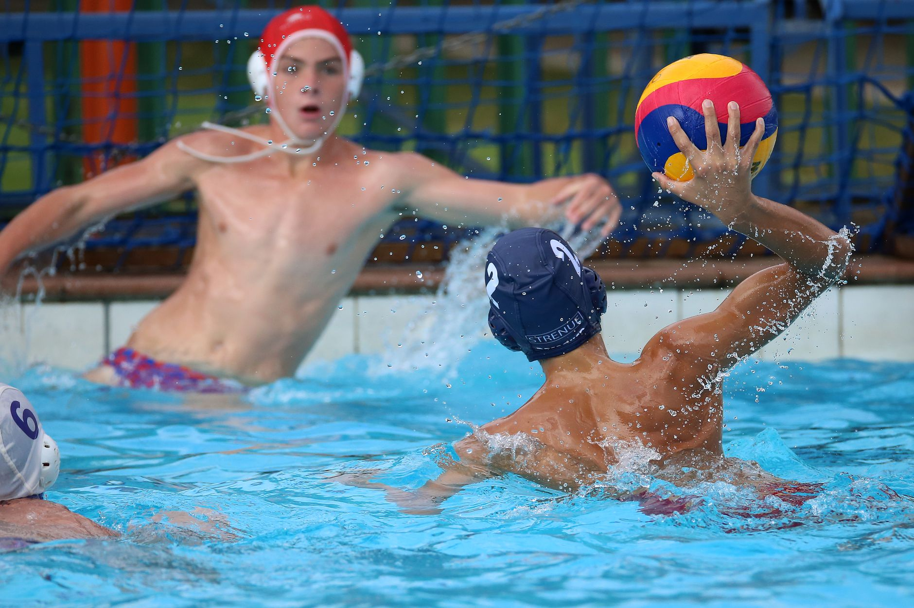

College Water Polo Recruiting Starts Earlier Than Most Families Realize
When Fordham University recently announced its incoming water polo recruiting class, it was more than just a headline for college sports fans. For families with young athletes in Wesley Chapel, Land O' Lakes, and across the Tampa Bay area, it was a meaningful reminder: the path to a college roster begins long before senior year of high school.
Water polo is one of the fastest-growing collegiate sports in the country, and university programs are actively seeking skilled, coachable, and well-rounded players. The question families often ask is, when should we start thinking about this? The honest answer is sooner than you might expect.
What College Coaches Are Really Looking For
It can be easy to assume that college recruiting is all about raw talent, but experienced coaches will tell you the full picture is much more nuanced. When programs like Fordham build their recruiting classes, they are evaluating young athletes on several key qualities beyond speed and strength in the water.
- Technical skill development: Players who have invested time in mastering proper technique — egg beater kick, passing accuracy, and positional awareness — stand out immediately.
- Coachability: Coaches want athletes who listen, adapt, and grow. A player who responds well to feedback in practice demonstrates the kind of mindset that thrives at the college level.
- Academic commitment: College programs recruit students first and athletes second. Strong grades open more doors and keep more opportunities on the table.
- Game experience: Consistent participation in club teams and competitive tournaments gives young players the exposure and game-speed repetitions that coaches look for on recruiting film.
The Role of Club and Academy Training in the Recruiting Pipeline
For many collegiate water polo players, the foundation of their recruiting profile was built during their club years. Structured, high-quality training environments give young athletes the repetitions, competitive experience, and skill refinement that school teams alone often cannot provide.
At Nexar Aquatic Academy, we work with youth swimmers and water polo players in the Wesley Chapel and Land O' Lakes communities to build exactly that kind of foundation. Our coaches focus on developing both the technical and mental skills that translate directly into competitive performance — the same qualities college recruiters are watching for.
A Timeline to Keep in Mind
While every athlete's journey is different, here is a general framework that can help families plan with intention rather than urgency.
- Ages 8–12: Focus entirely on skill development and a love for the game. Introduce proper technique and keep the experience positive and fun.
- Ages 13–14: Begin competing at the club level. Start building a highlight reel and attending showcases or tournaments where exposure to outside coaches is possible.
- Ages 15–16: Research programs that fit academically and athletically. Begin reaching out to college coaches with a thoughtful introductory email and a skills video.
- Age 17: Take official and unofficial visits. Understand the difference between Division I, II, and III programs to find the right fit for your athlete's goals.
The Bigger Picture for Tampa Bay Families
Seeing programs like Fordham announce strong recruiting classes is genuinely exciting for the sport, and it reinforces something our coaches believe deeply: water polo is a legitimate path to a college education and a lifelong love of athletic competition.
The Tampa Bay area has the weather, the facilities, and the growing youth sports culture to produce college-caliber players. Families who invest in quality coaching and competitive development early give their young athletes a real and meaningful advantage when the recruiting conversations eventually begin.
If your child is curious about water polo or is already in the water and looking to take the next step, Nexar Aquatic Academy is here to help guide that journey — one practice at a time.
Ready to get in the water?
First practice is completely FREE — no commitment needed.